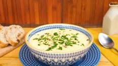
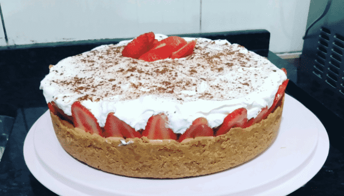
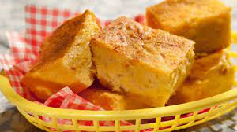
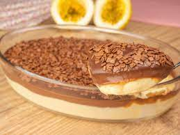

MISSÃO
Ajudar nossos leitores a cozinhar com simplicidade e prazer.
VISÃO
Ser seu "caderno" de receitas favorito.
VALORES
- Agimos com propósito
- Entregamos resultados com excelência
- Construímos juntos
- Trabalhamos com simplicidade
aqui vai ter a propaganda esquerda
Delícias Brasileiras
Descubra e aprenda a fazer diversos pratos presentes na nossa culinária nacional. Desde tacacá, coxinha e cuscuz paulista, até tortas doces, sobremesas e brigadeiro.
Sabores ao Redor do Mundo
Conheça e viaje para os mais diversos países do mundo por meio de seus pratos tradicionais. Você pode ir da Colômbia para a China, conhecer todos os sabores da culinária mexicana e muito mais.
Alimentação Saudável
Conheça pratos deliciosos para cozinhar e incluir na sua dieta.
aqui vai ter a propaganda direita
Adicione sua receita
Mural de receitas adicionadas

Sopa de Mandioquinha
Adicionada à 4 horas

Morangoffe
Adicionada à 20 horas

Sopa Paraguaia
Adicionada à 1 dia

Mousse de Maracuja com Chocolate
Adicionada à 1 dia